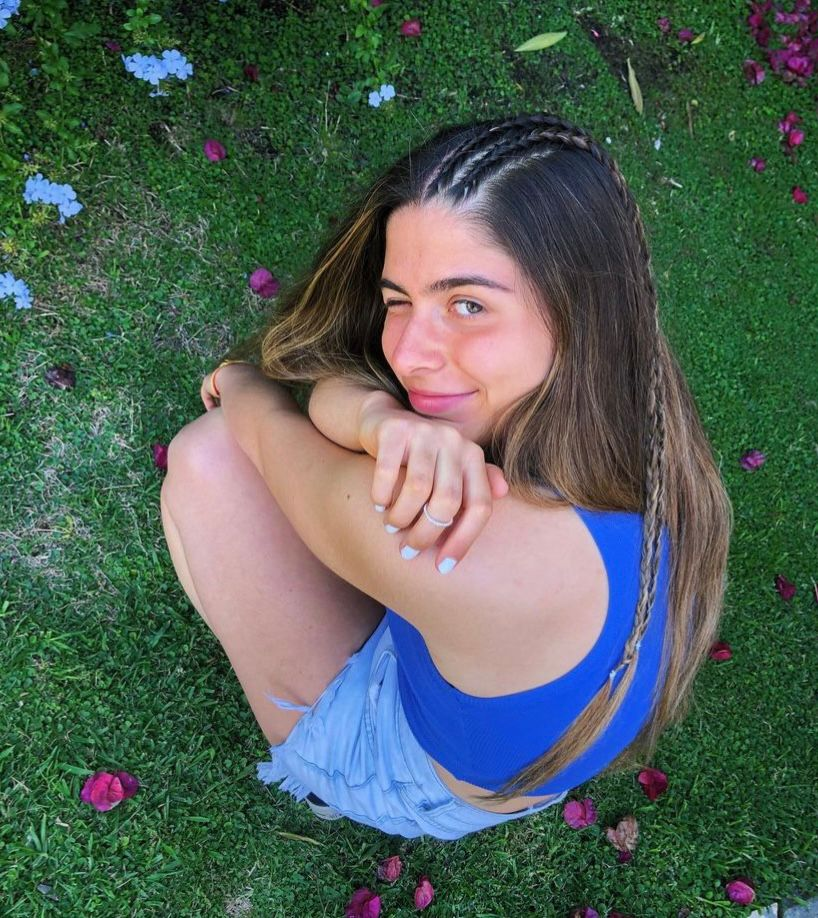

¡Buenas! Soy Lucía Leonardelli, creadora y diseñadora de Lulu´s accesorios.
Acá debajo encontrarás un poco más sobre nuestra historia. Cualquier duda, ¡no dudes en comunicarte con nosotras!
Nuestra historia
Lulu’s nació en 2020 cuando empecé a hacer collares por propia diversión y entretenimeinto. Tenía el deseo de usar un accesorio con estilo y originalidad, algo único que no se pueda encontrar en ningún lado. Comenzó como un hobby que, gracias a constantes elogios y pedidos de mis amigos/familiares, fue creciendo pasito a pasito.

Misión
Diseñar accesorios de alta calidad y originalidad que se adapten a los variados gustos de nuestra comunidad.
Visión
Brindar productos que siempre quieras llevar con vos ya que te hacen sentir único e incomparable.